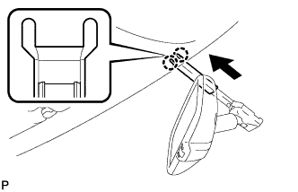

ВЕТРОВОЕ СТЕКЛО > УСТАНОВКА |
| 1. УСТАНОВИТЕ ФИКСАТОР ВЕТРОВОГО СТЕКЛА № 1 |
 |
Установите 2 новых фиксатора на кузов автомобиля, как показано на рисунке.
| *1 | Фиксатор ветрового стекла № 1 |
| *2 | Кузов автомобиля |
| 2. УСТАНОВИТЕ ФИКСАТОР ВЕТРОВОГО СТЕКЛА № 2 |
Нанесите грунтовку "G" на стекло в местах, где предполагается разместить фиксаторы.
Установите 2 новых фиксатора на стекло, как показано на рисунке.
| *1 | Ветровое стекло | - | |
| *a | Задняя сторона | *b | Керамический паз |
| *c | Керамическая линия | *d | Центр |
| Область | Заданные условия |
| a | 14,1 мм (0,555 дюйма) |
| 3. УСТАНОВИТЕ НАРУЖНЫЙ МОЛДИНГ ВЕТРОВОГО СТЕКЛА |
С помощью кисти или губки нанесите грунтовку "G" на поверхности соприкосновения стекла и молдинга, как показано на рисунке.
| *a | Задняя сторона | - | - |
| Участок | Заданные условия |
| a | 6,9 мм (0,271 дюйма) |
Снимите отслаивающуюся бумагу с нового наружного молдинга ветрового стекла и установите молдинг, как показано на рисунке.
| 4. УСТАНОВИТЕ КЛЕЙКИЙ УПЛОТНИТЕЛЬ ВЕТРОВОГО СТЕКЛА |
Нанесите грунтовку "G" на стекло в местах, где предполагается установить новый клейкий уплотнитель.
Снимите с клейкой стороны уплотнителя отслаивающуюся бумагу. Установите уплотнитель (клейкой стороной) на стекло (участки, обработанные грунтовкой "G"), кроме участка выше пазов на верхней части стекла.
| *a | Задняя сторона | *b | Керамический паз |
| *c | Осевая линия для уплотнителя | *d | Центральная линия герметика-фиксатора |
| Область | Заданные условия |
| a | 6,5 мм (0,256 дюйма) |
| 5. УСТАНОВИТЕ ВЕТРОВОЕ СТЕКЛО |
Установите стекло.
С помощью вакуумных присосок поместите ветровое стекло в необходимое положение.
Убедитесь, что все поверхности соприкосновения с краем стекла совершенно ровные.
Нанесите метки на стекло и кузов автомобиля в местах, показанных на рисунке.
Используя вакуумные присоски, снимите стекло.
| *a | Метка |
С помощью кисти нанесите грунтовку "M" на открытые поверхности кузова автомобиля.
| *1 | Грунтовка "M" |
| *2 | Герметик |
| *a | ПРАВИЛЬНО |
| *b | НЕПРАВИЛЬНО |
С помощью кисти или губки нанесите грунтовку "G" на поверхности соприкосновения стекла.
| *a | Задняя сторона | *b | Центральная линия герметика-фиксатора |
| Область | Заданные условия |
| a | 9,5 мм (0,374 дюйма) |
| b | 3,0 мм (0,118 дюйма) |
| c | 8,0 мм (0,315 дюйма) |
| d | 7,0 мм (0,276 дюйма) |
Нанесите герметик на стекло.
Срежьте кончик наконечника баллона, как показано на рисунке.
| Температура | Время использования |
| 35°C (95°F) | 15 мин |
| 20°C (68°F) | 1 час 40 минут |
| 5°C (41°F) | 8 часов |
Вставьте баллон в пистолет для нанесения герметика.
Нанесите герметик на ветровое стекло, как показано на рисунке.
| *1 | Герметик | - | - |
| *a | Задняя сторона | *b | Центральная линия герметика-фиксатора |
| Область | Заданные условия |
| a | 12,0 мм (0,472 дюйма) |
| b | 8,0 мм (0,315 дюйма) |
| c | 9,5 мм (0,374 дюйма) |
| d | 3,0 мм (0,118 дюйма) |
Установите стекло на кузов автомобиля.
С помощью вакуумных присосок расположите ветровое стекло так, чтобы метки были совмещены. Аккуратно надавите на него по краям.
Аккуратно надавите на наружную часть стекла, чтобы гарантировать его надежную фиксацию на кузове.
Надежно зафиксируйте стекло на месте с помощью защитной клейкой ленты или подобного материала до тех пор, пока фиксатор не затвердеет.
| Температура | Минимальный период времени до движения автомобиля |
| 35°C (95°F) | 1 час 30 минут |
| 20°C (68°F) | 5 часов |
| 5°C (41°F) | 24 часа |
| *a | Метка |
С системой противообледенителя ветрового стекла:
Подсоедините разъем противообледенителя ветрового стекла.
| 6. ПРОВЕРЬТЕ, НЕТ ЛИ ПРОТЕЧЕК; УСТРАНИТЕ ИХ, ЕСЛИ ОНИ ЕСТЬ |
Испытание на герметичность выполняйте после того, как герметик полностью затвердеет.
Нанесите на все выявленные места утечек герметизирующий состав для стекол автомобиля.
| 7. УСТАНОВИТЕ ОБИВКУ КРЫШИ В СБОРЕ |
Для 5-дверных моделей:
Верните обивку крыши в первоначальное положение. См. указания на стр. Нажмите здесь.
Для 3-дверных моделей:
Верните обивку крыши в первоначальное положение. См. указания на стр. Нажмите здесь.
| 8. УСТАНОВИТЕ ВНУТРЕННЕЕ ЗЕРКАЛО ЗАДНЕГО ВИДА В СБОРЕ (для моделей без зеркала с электрохромным покрытием) |
 |
Надвиньте и установите внутреннее зеркало заднего вида, как показано на рисунке.
 |
Введите в зацепление 2 захвата, чтобы установить крышку.
| 9. УСТАНОВИТЕ ВНУТРЕННЕЕ ЗЕРКАЛО ЗАДНЕГО ВИДА В СБОРЕ (для моделей с зеркалом с электрохромным покрытием) |
С помощью торцевого ключа "torx" T20 закрепите внутреннее зеркало заднего вида винтом.
Подсоедините разъем.
| 10. УСТАНОВИТЕ КРЫШКУ ДЕРЖАТЕЛЯ СТОЙКИ ВНУТРЕННЕГО ЗЕРКАЛА ЗАДНЕГО ВИДА (для моделей с зеркалом с электрохромным покрытием) |
 |
Введите в зацепление 2 захвата.
|  |
Закрепив 2 захвата, как показано на рисунке, установите крышку держателя стойки внутреннего зеркала заднего вида.
| 11. ЗАКРЕПИТЕ ЛЕНТУ ДАТЧИКА ДОЖДЯ (для моделей с датчиком дождя) |
С помощью куска ткани или аналогичного средства очистите чувствительную часть датчика дождя.
 |
Снимите отслаивающуюся пленку меньшего размера и прикрепите ленту датчика дождя на чувствительную часть датчика дождя, как показано на рисунке.
| Область | Измерение |
| A | 13,5 мм (0,532 дюйма) |
| B | 7,5 мм (0,295 дюйма) |
| *1 | Лента датчика дождя |
| 12. УСТАНОВИТЕ ДАТЧИК ДОЖДЯ (для моделей с датчиком дождя) |
С помощью куска ткани или аналогичного средства очистите ветровое стекло.
В случае установки нового датчика дождя или замены ленты датчика дождя:
Снимите отслаивающуюся пленку.
 |
Введите в зацепление 2 направляющих и осторожно прикрепите датчик дождя к поверхности стекла, не допуская образования пузырьков воздуха между соприкасающимися поверхностями.
| *1 | Стопор |
| *2 | Направляющая |
Вставьте фиксатор.
Подсоедините разъем.
| 13. УСТАНОВИТЕ КРЫШКУ ДАТЧИКА ДОЖДЯ (для моделей с датчиком дождя) |
Введите в зацепление 2 захвата, чтобы установить крышку датчика дождя.
| 14. УСТАНОВИТЕ ЛАМПУ ИНДИВИДУАЛЬНОГО ОСВЕЩЕНИЯ |
Подсоедините разъем.
Закрепив 4 фиксатора, установите лампу индивидуального освещения.
| 15. УСТАНОВИТЕ ДЕРЖАТЕЛЬ ПРОТИВОСОЛНЕЧНОГО КОЗЫРЬКА |
Введите в зацепление 2 захвата.
Вставьте держатель противосолнечного козырька, чтобы закрепить его.
| 16. УСТАНОВИТЕ ЛЕВЫЙ ПРОТИВОСОЛНЕЧНЫЙ КОЗЫРЕК В СБОРЕ |
Установите козырек и закрепите его 2 винтами.
| 17. УСТАНОВИТЕ ПРАВЫЙ ПРОТИВОСОЛНЕЧНЫЙ КОЗЫРЕК |
| 18. УСТАНОВИТЕ КРЫШКУ КРОНШТЕЙНА ЛЕВОГО ПРОТИВОСОЛНЕЧНОГО КОЗЫРЬКА |
Установите крышку кронштейна противосолнечного козырька и введите в зацепление 4 захвата.
| 19. УСТАНОВИТЕ КРЫШКУ КРОНШТЕЙНА ПРАВОГО ПРОТИВОСОЛНЕЧНОГО КОЗЫРЬКА |
| 20. УСТАНОВИТЕ ОБИВКУ ЛЕВОЙ СТОЙКИ ВЕТРОВОГО СТЕКЛА |
Введите в зацепление 3 направляющих, чтобы установить обивку стойки ветрового стекла.
| 21. УСТАНОВИТЕ ОБИВКУ ПРАВОЙ СТОЙКИ ВЕТРОВОГО СТЕКЛА |
| 22. УСТАНОВИТЕ ВЕРХНИЙ ПОРУЧЕНЬ № 1 |
Введите в зацепление 2 захвата, чтобы установить верхний поручень № 1.
Вверните 2 болта.
| 23. УСТАНОВИТЕ ЛЕВУЮ ПЕРЕДНЮЮ ЗАГЛУШКУ ВЕРХНЕГО ПОРУЧНЯ № 1 |
Введите в зацепление 2 захвата, чтобы установить переднюю заглушку верхнего поручня № 1.
| 24. УСТАНОВИТЕ ПРАВУЮ ПЕРЕДНЮЮ ЗАГЛУШКУ ВЕРХНЕГО ПОРУЧНЯ № 1 |
| 25. УСТАНОВИТЕ УПЛОТНИТЕЛЬ ОБШИВКИ ПРОЕМА ЛЕВОЙ ПЕРЕДНЕЙ ДВЕРИ |
 |
Совместите нанесенную краской отметку на уплотнителе обшивки проема передней двери с отмеченным положением на автомобиле и установите уплотнитель обшивки проема передней двери, как показано на рисунке.
| *1 | Метка, нанесенная краской |
| *2 | Положение метки |
| 26. УСТАНОВИТЕ УПЛОТНИТЕЛЬ ОБШИВКИ ПРОЕМА ПРАВОЙ ПЕРЕДНЕЙ ДВЕРИ |
| 27. УСТАНОВИТЕ БОКОВУЮ ОБЛИЦОВОЧНУЮ НАКЛАДКУ С ЛЕВОЙ СТОРОНЫ КОЖУХА |
Введите в зацепление фиксатор и захват, чтобы установить боковую облицовочную накладку кожуха.
Установите фиксатор.
| 28. УСТАНОВИТЕ БОКОВУЮ ОБЛИЦОВОЧНУЮ НАКЛАДКУ С ПРАВОЙ СТОРОНЫ КОЖУХА |
| 29. УСТАНОВИТЕ ОПОРНУЮ НАКЛАДКУ ЛЕВОЙ ДВЕРИ В СБОРЕ |
Введите в зацепление 4 фиксатора, 10 захватов и 2 направляющие, чтобы установить опорную накладку двери.
| 30. УСТАНОВИТЕ ОПОРНУЮ НАКЛАДКУ ПРАВОЙ ДВЕРИ В СБОРЕ |
| 31. УСТАНОВИТЕ ФИКСАТОР НАРУЖНОГО МОЛДИНГА ВЕТРОВОГО СТЕКЛА № 3 |
Установите наконечник на пневматическое или ручное клепальное устройство.
Вставьте в наконечник оправку нового фиксатора наружного молдинга ветрового стекла № 3.
Используя клепальное устройство, установите фиксаторы наружного молдинга ветрового стекла № 3, как показано на рисунке.

| *1 | Клепальный молоток |
| *2 | Оправка |
| *a | НЕПРАВИЛЬНО |
| *b | ПРАВИЛЬНО |
| *1 | Клепальный молоток |
| *a | НЕПРАВИЛЬНО |
| *b | ПРАВИЛЬНО |
 |
| *1 | Клепальный молоток |
| *a | НЕПРАВИЛЬНО |
| *b | ПРАВИЛЬНО |
| 32. УСТАНОВИТЕ ФИКСАТОР НАРУЖНОГО МОЛДИНГА ВЕТРОВОГО СТЕКЛА № 1 |
Установите 5 фиксаторов молдинга № 1
| 33. УСТАНОВИТЕ ЛЕВЫЙ НИЖНИЙ НАРУЖНЫЙ МОЛДИНГ ВЕТРОВОГО СТЕКЛА |
Введите 5 захватов в зацепление и установите молдинг.
Снимите защитную ленту с краев молдинга.
| 34. УСТАНОВИТЕ ПРАВЫЙ НИЖНИЙ НАРУЖНЫЙ МОЛДИНГ ВЕТРОВОГО СТЕКЛА |
| 35. УСТАНОВИТЕ ВЕНТИЛЯЦИОННУЮ РЕШЕТКУ В ВЕРХНЕЙ ЧАСТИ КОЖУХА В СБОРЕ |
 |
Введите в зацепление 10 направляющих (B).
Введите в зацепление 6 захватов и направляющую (A), как показано на рисунке.
| *1 | Направляющая A |
| *2 | Направляющая B |
Установите 2 фиксатора на вентиляционную решетку в верхней части кожуха.
| 36. УСТАНОВИТЕ РЫЧАГ ПРАВОГО ПЕРЕДНЕГО СТЕКЛООЧИСТИТЕЛЯ СО ЩЕТКОЙ В СБОРЕ |
Приведите в действие стеклоочиститель и остановите электродвигатель стеклоочистителя ветрового стекла в положении автоматического ограничения хода.
 |
При повторном использовании правого рычага переднего стеклоочистителя со щеткой в сборе:
Очистите зубчатую часть рычага стеклоочистителя.
| *1 | Зубчатая часть рычага стеклоочистителя |
| *2 | Проволочная щетка |
| *3 | Зубчатая часть оси вращения стеклоочистителя |
При повторном использовании тяги стеклоочистителя ветрового стекла в сборе:
Почистите зубчатую часть оси вращения стеклоочистителя проволочной щеткой.
 |
Установите правый рычаг переднего стеклоочистителя со щеткой в сборе, как показано на рисунке, и закрепите их гайкой.
| Область | Нормальное состояние |
| a | 7,5 мм (0,295 дюйма) |
| b | 7,5 мм (0,295 дюйма) |
| c | 7,5 мм (0,295 дюйма) |
| d | 7,5 мм (0,295 дюйма) |
| *A | Для моделей с левосторонним рулевым управлением |
| *B | Для моделей с правосторонним рулевым управлением |
| *1 | Керамическая метка |
| *a | Верхняя граница |
| *b | Нижняя граница |
| 37. УСТАНОВИТЕ РЫЧАГ ЛЕВОГО ПЕРЕДНЕГО СТЕКЛООЧИСТИТЕЛЯ СО ЩЕТКОЙ В СБОРЕ |
|
При повторном использовании левого рычага переднего стеклоочистителя со щеткой в сборе:
Очистите зубчатую часть рычага стеклоочистителя.
| *1 | Зубчатая часть рычага стеклоочистителя |
| *2 | Проволочная щетка |
| *3 | Зубчатая часть оси вращения стеклоочистителя |
При повторном использовании тяги стеклоочистителя ветрового стекла в сборе:
Почистите зубчатую часть оси вращения стеклоочистителя проволочной щеткой.
Установите левый рычаг переднего стеклоочистителя со щеткой в сборе, как показано на рисунке, и закрепите их гайкой.
| Область | Нормальное состояние |
| a | 7,5 мм (0,295 дюйма) |
| b | 7,5 мм (0,295 дюйма) |
| c | 7,5 мм (0,295 дюйма) |
| d | 7,5 мм (0,295 дюйма) |
| *A | Для моделей с левосторонним рулевым управлением |
| *B | Для моделей с правосторонним рулевым управлением |
| *1 | Керамическая метка |
| *a | Верхняя граница |
| *b | Нижняя граница |
Приведите в действие передние стеклоочистители, одновременно распыляя омывающую жидкость на ветровое стекло. Убедитесь, что передние стеклоочистители работают надлежащим образом и не задевают кузов автомобиля.
| 38. УСТАНОВИТЕ НАКЛАДКУ РЫЧАГА СТЕКЛООЧИСТИТЕЛЯ ВЕТРОВОГО СТЕКЛА |
 |
Введите в зацепление 3 захвата, чтобы установить накладку рычага стеклоочистителя.
| 39. УСТАНОВИТЕ ПРОКЛАДКУ МЕЖДУ ЛЕВЫМ ПЕРЕДНИМ КРЫЛОМ И КОЖУХОМ |
Введите в зацепление 5 захватов, чтобы установить уплотнение между левым передним крылом и кожухом.
| 40. УСТАНОВИТЕ ПРОКЛАДКУ МЕЖДУ ПРАВЫМ ПЕРЕДНИМ КРЫЛОМ И КОЖУХОМ |
| 41. УСТАНОВИТЕ ЗАЩИТУ БОКОВОЙ ПАНЕЛИ ЛЕВОГО ПЕРЕДНЕГО КРЫЛА |
Введите в зацепление 4 фиксатора и 2 направляющих, чтобы установить боковую панель крыла.
| 42. УСТАНОВИТЕ ЗАЩИТУ БОКОВОЙ ПАНЕЛИ ПРАВОГО ПЕРЕДНЕГО КРЫЛА |
| 43. УСТАНОВИТЕ ВЕРХНЕЕ УПЛОТНЕНИЕ КРОНШТЕЙНА РАДИАТОРА |
Установите верхнее уплотнение кронштейна радиатора и закрепите его 13 фиксаторами.
| 44. ПОДСОЕДИНИТЕ ПРОВОД К ОТРИЦАТЕЛЬНОМУ (-) ВЫВОДУ АККУМУЛЯТОРНОЙ БАТАРЕИ |